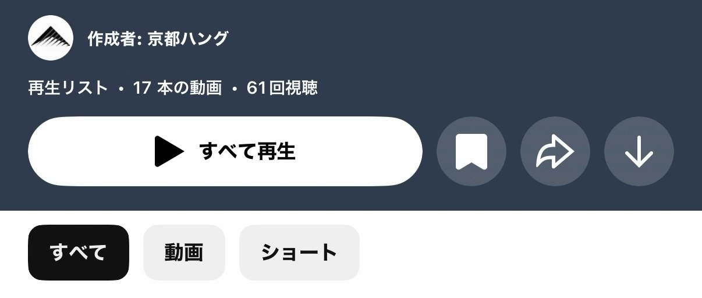

1
自分の再生リストを開く
このサイトの「個人再生リスト」から自分の名前を押して、YouTubeで開きます。
2
ブックマークボタンを押す
再生リスト画面上部のブックマーク形のボタンを押します。

3
保存完了
以後は、普段使っているYouTubeアカウントから自分の再生リストをすぐ見返せます。
共通パスコードを入力してください。
自分の再生リストを、普段使っているYouTubeアカウントに保存しておく方法です。
